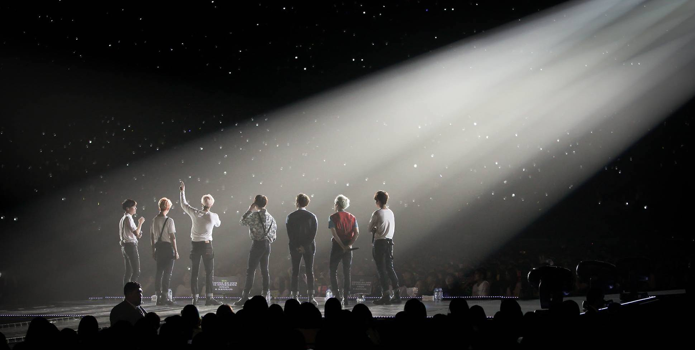

☰
WHAT TO EXPECT
Since I have not actually gone to a BTS concert (Rose Bowl will be my first time!) I have compiled helpful advice after combing through several Reddit threads.
Respect each other, respect BTS.
Stadium concerts will most likely be seated. Don't worry, no one will steal your seat. If there is a mistake, ask for an usher to sort out the problem for you. For standing concerts, check out advice from Reddit user /u/AgentEnterprise's' Deviwinter’s Guide to Concert Tickets. Some people also discussed their GA Pit experiences.
Also, this may be obvious, but don't cut the lines, be patient with fellow concertgoers and staff, don't stand on the seats, don't throw stuff on the stage, don't hold up huge signs.
Also, this may be obvious, but don't cut the lines, be patient with fellow concertgoers and staff, don't stand on the seats, don't throw stuff on the stage, don't hold up huge signs.
Stay safe during concerts, events, and traveling.
/u/DreamGirl3 has a comprehensive guide on protecting yourself when going to concerts. She addresses ways to stay safe, such as having a plan in place, staying in groups, staying in safe areas of the city, being careful about sharing information, and what to do in an emergency.
Arrive early.
The general consensus is to arrive around 2 hours before the concert starts. Be aware of traffic and time spent finding a parking spot. When you get in, use the bathroom and buy water/snacks (if you weren't allowed to bring any in). If there are bathrooms on the upper floors, those might have shorter lines. During the concert, there won't be time for you to leave unless you want to miss a portion of it.
Don't worry about arriving too early since there will probably be MVs playing and you can practice your fanchants. But also save your energy and voice for the actual show.
Don't worry about arriving too early since there will probably be MVs playing and you can practice your fanchants. But also save your energy and voice for the actual show.
Be ready to camp in line for official merchandise tents to open.
I've heard of people lining up at 10pm the night before. Someone got there at midnight and there were already 100+ people in line. They also mentioned trying to hide their faces from reporters the next morning. You also need friends in line that can hold your spot while you run to the restroom (and make sure there are restrooms open at 2am). Bring food, water, blankets, sleeping bags, tents, and bags to hold all your merch. So unless you can handle sleeping outside all night, do not camp for merch. With the stadium tours, the lines will be much, much worse.
Only spend what you can afford. Also there might be people selling you unofficial merchandise for lower price. If the quality is nice, go for it. If it is an obvious/terrible knockoff, don't waste your money.
If you just want an ARMY bomb there is usually an express line and they usually don't run out.
If you don't want to camp for merch, see if there is a BT21 store in the city. It will also be crowded, it will also have long lines, but the line will be more bearable.
Only spend what you can afford. Also there might be people selling you unofficial merchandise for lower price. If the quality is nice, go for it. If it is an obvious/terrible knockoff, don't waste your money.
If you just want an ARMY bomb there is usually an express line and they usually don't run out.
If you don't want to camp for merch, see if there is a BT21 store in the city. It will also be crowded, it will also have long lines, but the line will be more bearable.
Resist the urge to film everything.
Don't be the person who watched the entire show through a phone. Enjoy the concert, knowing that other people will have much better recordings of it than you.
Eat dinner ahead of time.
Eat dinner before going to the concert. Check if outside food/water is allowed. If not, it's worth the extra couple bucks to have a snack and water and not faint during the concert.
Look up the stadium layout ahead of time.
There will be long lines everywhere. Make sure you're getting into the correct lines; otherwise you will waste a lot of time. Note where the bathrooms are, especially the ones on the higher level, which will have shorter lines.
Book hotels and flights early.
Hotels near the stadium will be all full and flight prices will go up the longer you wait. If hotels are full/really expensive, look into Airbnbs in the area. Do the math and see if rental car cost + parking fees outweigh the cost of Uber/Lyft when prices start surging.